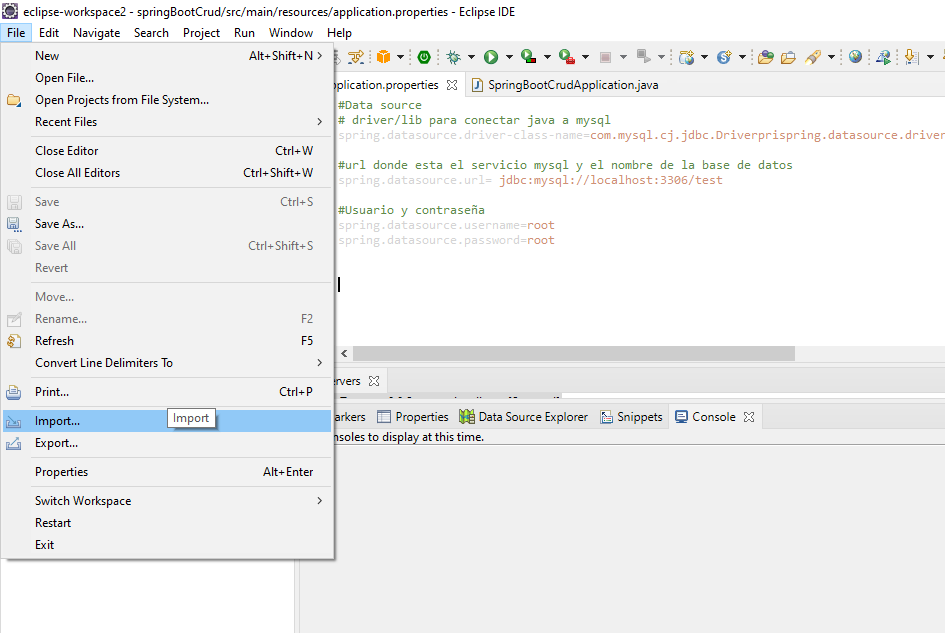
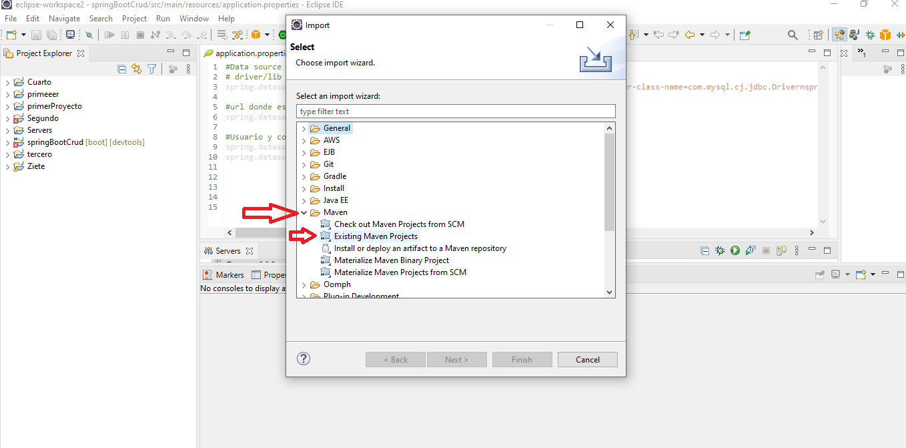
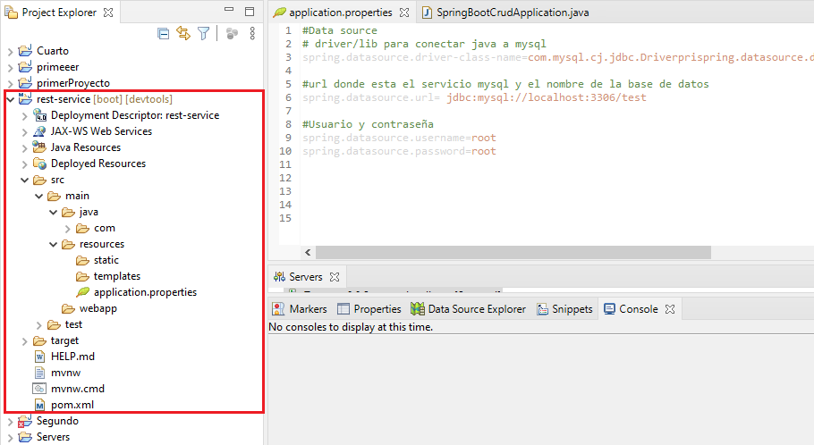
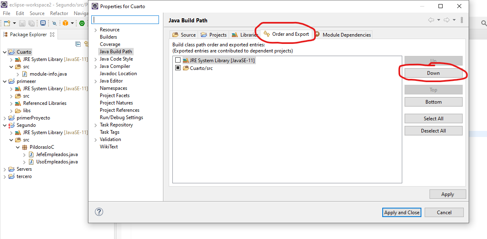
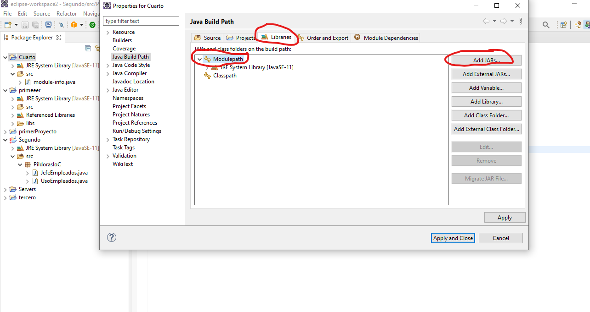
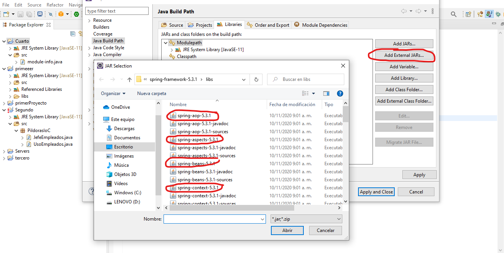

SpringBoot
Building a RESTful web Service
setup maven
(REST) representational state transfer, es una estilo arquitectonico que especifica
como se dara la comunicacion entre el usuario y el servidor
establece las reglas de comunicacion entre el usuario y el servidor: que metodos HTTP
disponibles, como se mostraran los recursos.
El Boot hace la configuracion del proyecto e incluye las librerias
Se realiza iniciando con la configuracion del boot, se debe hacer la configuracion con
el Spring Inicializr
El cual para el presente proyecto se debe configurar como muestra la siguiente imagen.
En donde se indica: Project > maven, Lenguage: Java, version de
Spring (ya viene por defecto), los datos del proyecto, Packaging War, version de
java, y las dependencias a incluir, que en este caso son: Spring Web, Thymeleaf,
Spring Data JPA, MySQL Driver y Spring Boot DevTools
Al dar click en Generate 'CRTL' se genera una carpeta .zip la cual descomprimimos y procedemos a importar el proyecto con Eclipse EE, con la pestaña file
Seleccionamos import y luego en la ventana que se abre, seleccionamos: Maven / Existing Maven Project luego damos click en siguiente y nos abre una nueva ventana en donde seleccionamos la carpeta descomprimida creada por SpringBoot
Seleccionamos import y luego en la ventana que se abre, seleccionamos: Con lo cual nos crea un nuvo proyecto con los archivos y carpetas que se muestran en la siguiente imagen
Integrar libreria
Nos colocamos en la vista de Java (window/ perspective/ open perspective) iniciamos un nuevo proyecto: File / new / new Java project, en la ventana que se abre dejamos seleccionado el boton de "use a project specific JRE" y damos en Finish


Ahora el proyecto creado aparece en el listado de carpetas, en el costado izquierdo
de la interfaz, damos clic derecho sobre este: build path / configure Build path.

En la ventana que se abre, vamos a la pestaña Order and Export, Colocamos de primero: la carpeta SRC, utilizando los el Boton lateral
Ahora, vamos a la pestaña Libraries, damos un click sobre Modulepath (tiene dos flechitas) A lo cual se habilitan el boton de Add JARs...
Damos click en el Boton Add External JARs..., A lo cual se abre una nueva ventana, donde buscamos la ruta de la carpeta en donde se encuentra el Spring JAR filesque descargamos, en la carpeta libs; solamente seleccionamos los archivos binarios, es decir que no incluimos los -javadoc & -source
Despues de abrir los archivos seleccionados, damos en Apply y despues en Apply and Close

Con lo cual se nos crea un archivo nuevo llamado: JRE System Library
 video tutorial →
video tutorial →
Terminal windows y version java
Para abrir el termina se debe hacer la combinacion de teclas Windows + r y parece la ventana ejecutar, en donde escribios cmd y damos a enter

Para saber la version de java indicamos: java -version